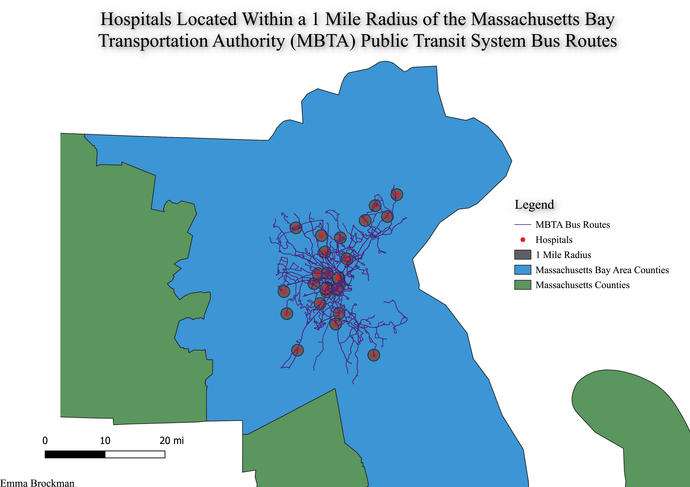

Homework 8
Hiiiii! Welcome to my Homework 8 page.
For this assignment, I asked the question, "How many hospitals are readily accessible (via public transportation) to citizens residing in the Massachusetts Bay Area?" In order to analyze this, I decided to examine the bus routes of the Massachusetts Bay Transportation Authority (MBTA) Public Transit System, as these routes are easily accessible modes of transportation for all residents of the area. From there, I decided to utilize the dissolve() function to create one single layer for all the counties MBTA serves. This allows us to fully see the scope of MBTA's bus routes. Then, I implmented two vector files, the hospitals and bus routes. The hospital file included all hospitals in the entire state of MA, so I utilized the intersect() function to eliminate all but those on the MBTA bus routes. From there, I used the buffer() function to implement a 1 mile radius around the hospitals, so one can see from which routes they are accesible from. There were more significantly more hospitals on the route than I anticipated, and it seems as if citizens in the area have an immense amount of options to choose from when taking MBTA buses!

Data used for this project
Hospital Data Set
and
Bus Route Data Set